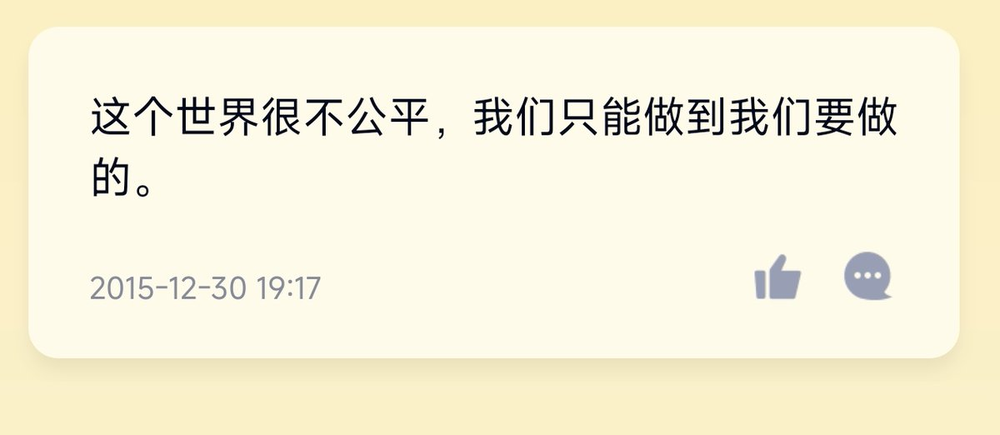

最近偶然翻到一张我14岁时期写的动态。
那时的我是我刚接触到社会的无数真正意义上黑暗面的几年，接触到无数偏远地区人口拐卖，绑架。接触到无数偏远地区的女孩在十二三岁就被迫辍学，被逼婚，强奸，生育，殴打，监禁人身自由的几年。
那时的我从小躺在一线城市的温床里，却以最血淋淋的方式认识了这个残酷的世界。给当年我刚刚形成的世界观造成了巨大的冲击。


那时的我是我刚接触到社会的无数真正意义上黑暗面的几年，接触到无数偏远地区人口拐卖，绑架。接触到无数偏远地区的女孩在十二三岁就被迫辍学，被逼婚，强奸，生育，殴打，监禁人身自由的几年。
那时的我从小躺在一线城市的温床里，却以最血淋淋的方式认识了这个残酷的世界。给当年我刚刚形成的世界观造成了巨大的冲击。

最近说我“眼光只局限在mtf社群里”的人有些多，尤其是某些追求“脱跨入顺”的跨性别女性，以及某些来自女性主义社群的顺性别者。
但是此时我凌晨两点都还在为一个16岁顺女的个案给志愿者做个案督导和答疑。 https://t.co/5eFUl8Mn9A https://t.co/lgns6VZ5WN
但是此时我凌晨两点都还在为一个16岁顺女的个案给志愿者做个案督导和答疑。 https://t.co/5eFUl8Mn9A https://t.co/lgns6VZ5WN